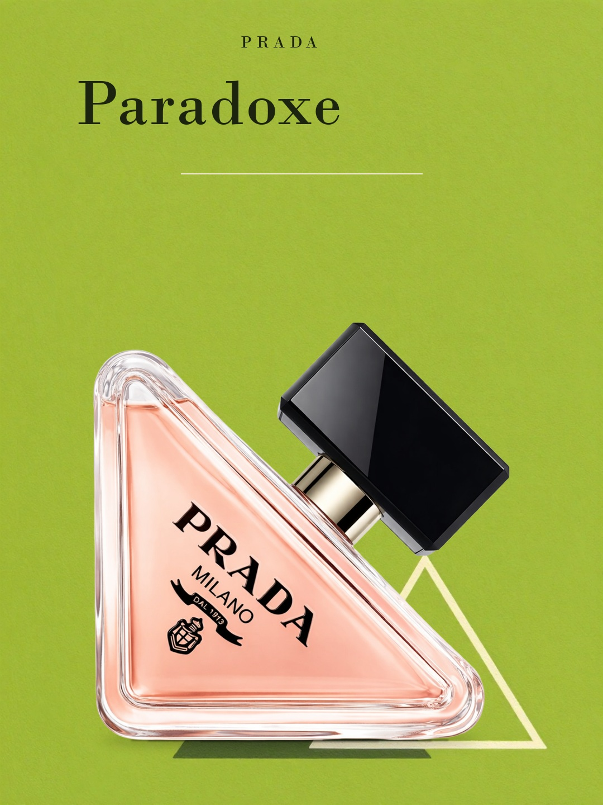
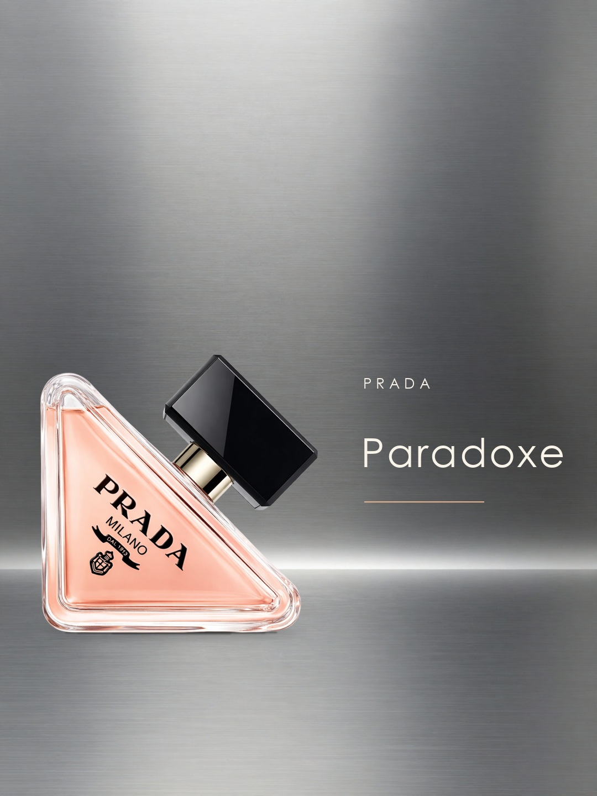
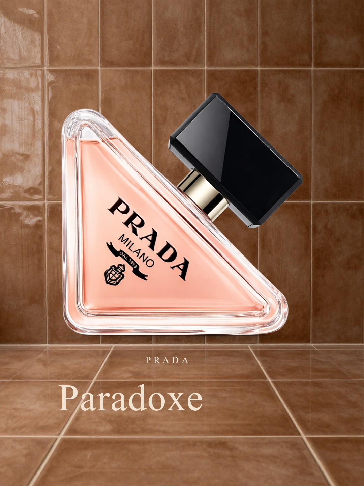
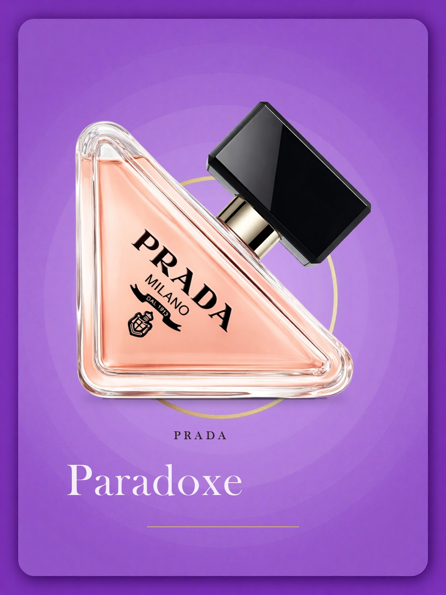
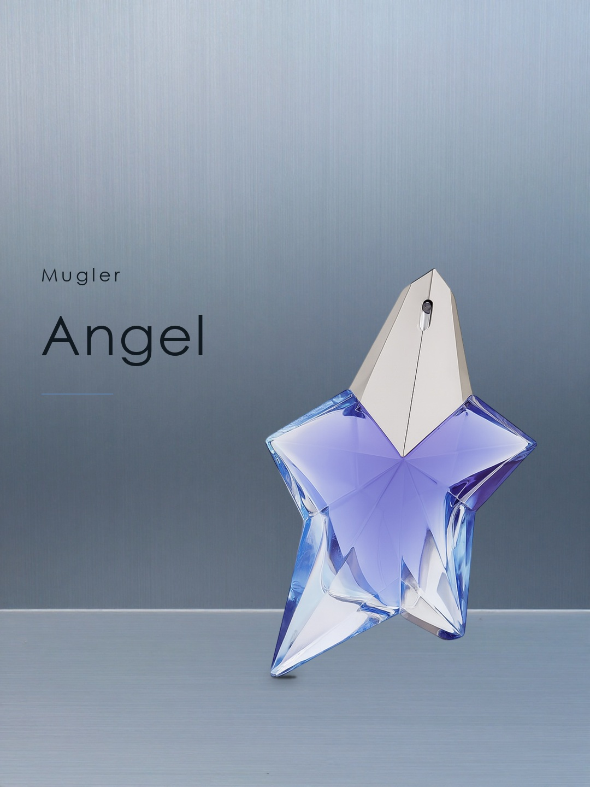

Prada Paradoxe · Chartreuse Hard-Edge Paradox
NEEDS_REVIEW · 首版 77.4 → 选中 V2 80.9

首次 选中版本（可能仍是首版）
选中版本（可能仍是首版）Prada Paradoxe · Chrome Vapor Meridian
NEEDS_REVIEW · 首版 77.1 → 选中 V2 77.3

首次 选中版本（可能仍是首版）
选中版本（可能仍是首版）Prada Paradoxe · Cocoa Glaze Tile Ledger
NEEDS_REVIEW · 首版 72.9 → 选中 V2 79.1

首次 选中版本（可能仍是首版）
选中版本（可能仍是首版）Prada Paradoxe · Orchid Fresnel Stair
NEEDS_REVIEW · 首版 75.1 → 选中 V2 77.1

首次 选中版本（可能仍是首版）
选中版本（可能仍是首版）Mugler Angel · Star-Chart Engraving Plate
NEEDS_REVIEW · 首版 80.3 → 选中 V1 80.3
 首次选中版本（可能仍是首版）
首次选中版本（可能仍是首版）Mugler Angel · Brushed Aluminium Observatory Deck
NEEDS_REVIEW · 首版 77.7 → 选中 V2 78.9

首次 选中版本（可能仍是首版）
选中版本（可能仍是首版）Mugler Angel · Midnight Meridian Foil Monument
NEEDS_REVIEW · 首版 None → 选中 V1 None
 首次选中版本（可能仍是首版）
首次选中版本（可能仍是首版）Mugler Angel · Frosted Glass Dawn Veil
NEEDS_REVIEW · 首版 75.4 → 选中 V1 75.4
 首次选中版本（可能仍是首版）
首次选中版本（可能仍是首版）